Online body transformation coaching for ADHD brains
Training, nutrition and habits built to work with your ADHD brain, not against it.
Takes 2 minutes. No pressure.
Why it's harder with ADHD
The problem isn't you. Most plans are built for brains that find routine easy, so you've been following the wrong plan.
I'm a coach with ADHD. I've lived this, and I built my coaching around how our brains actually work.
Client transformations
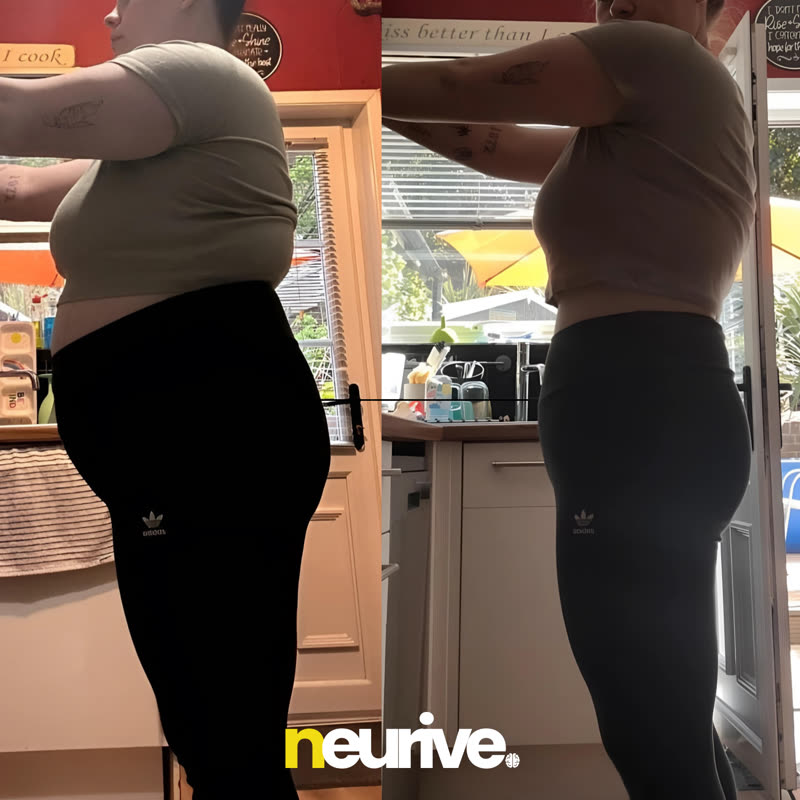
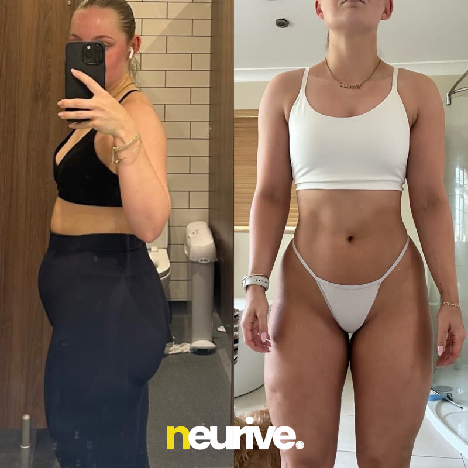
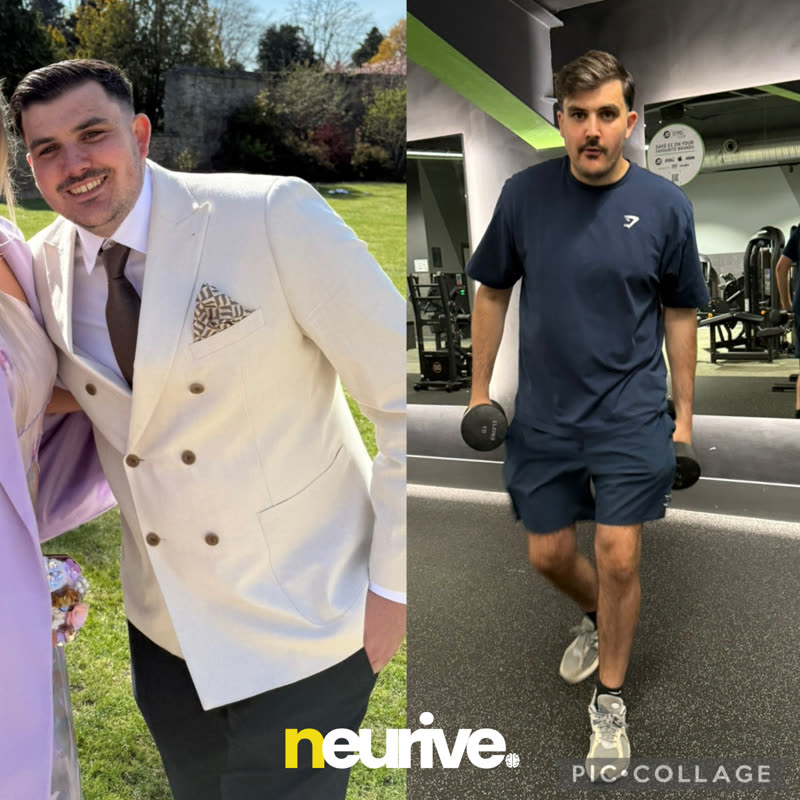
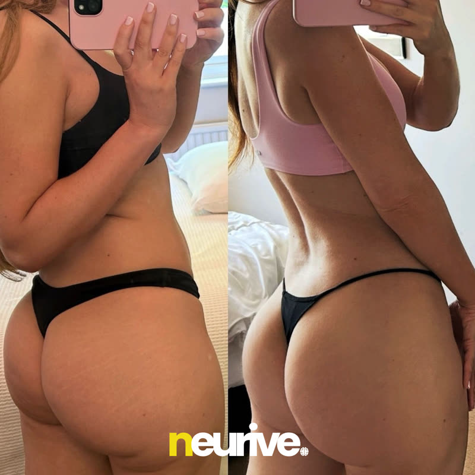
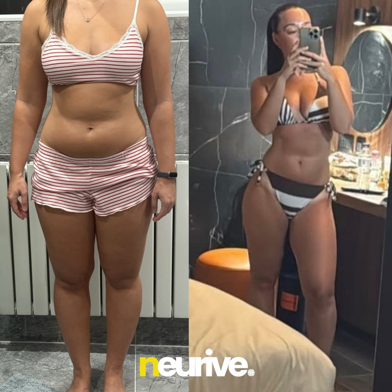
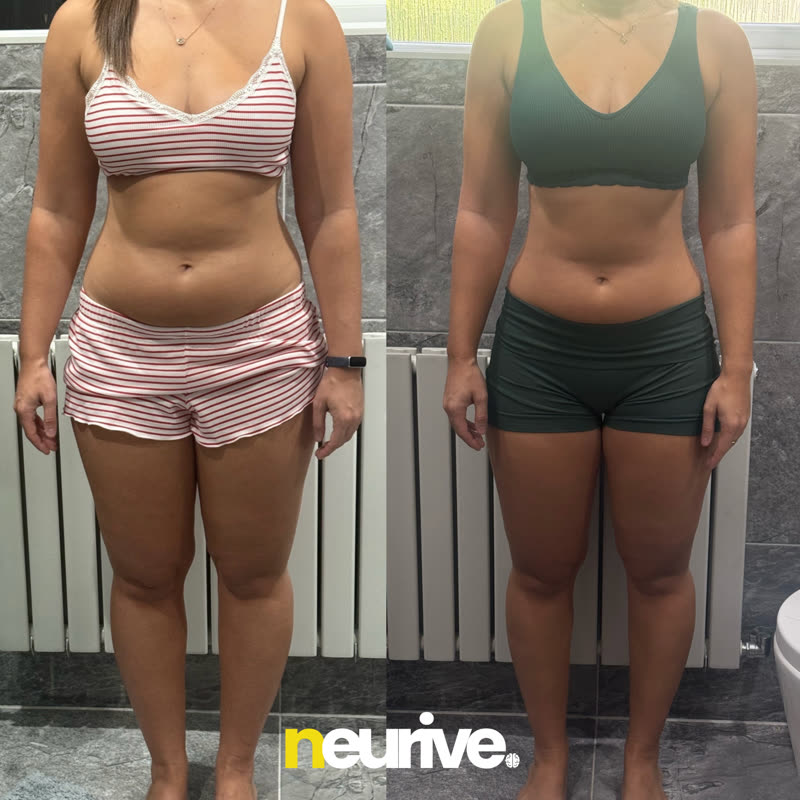
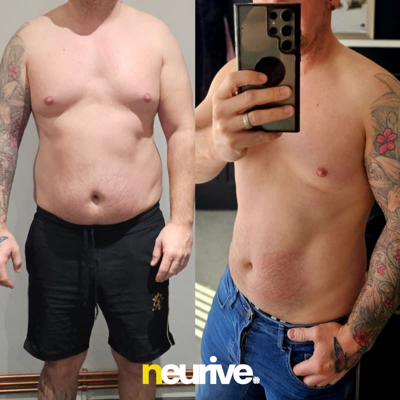
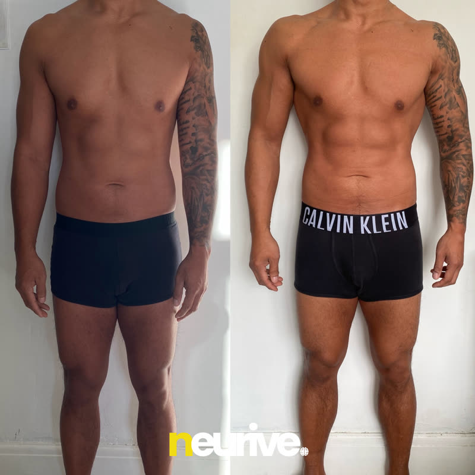
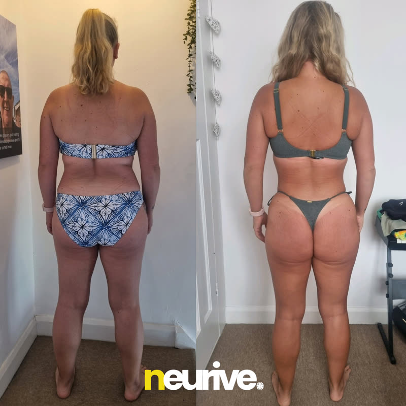
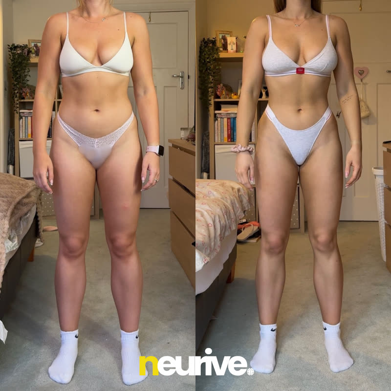
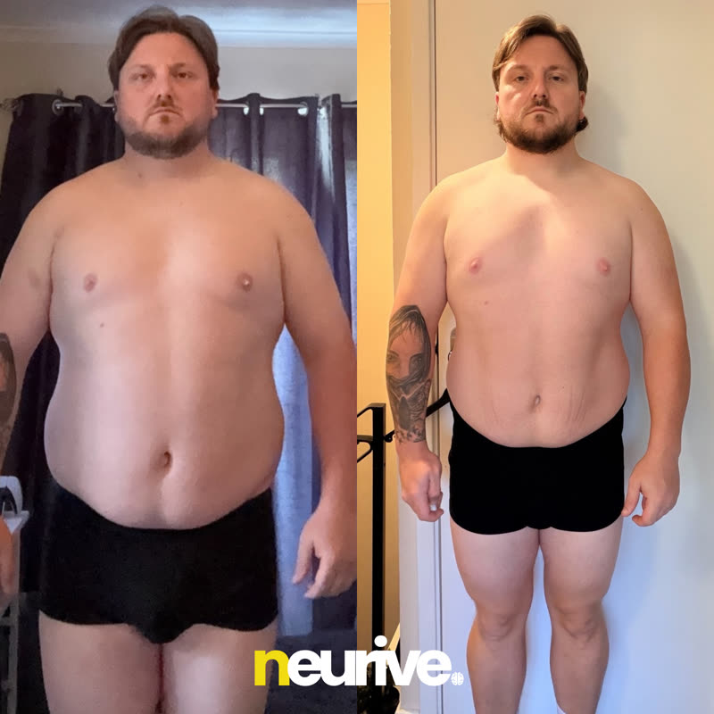
Clients I've coached online. Shared with their permission. Individual results vary.
Sound familiar?
You start a new plan and quit by week 3.
One missed day turns into a missed month.
You forget to eat, then binge later.
It's not a willpower problem. Normal plans just aren't built for ADHD brains.
Why your body matters for your ADHD
ADHD is linked to differences in how the brain uses dopamine, the chemical behind motivation, focus and reward.
Regular exercise is linked to better mood, focus and energy. Good food and sleep help too.
When your body feels better, sticking to everything else gets easier.
Coaching isn't a replacement for medication or medical support. Always speak to your GP about your ADHD treatment.
Chaice's story
Stuck. Feeling behind. Not sure which direction to go. Struggling with his ADHD.
Together we got him to understand himself and his ADHD. He built a routine and structure that actually stuck.
He turned his life around. Got a promotion at work. Travelled the world.
People I've coached
This is where you start
This is where you end up
2 minutes. Tell me where you're at.
We chat about what's holding you back and if this is right for you.
12 weeks 1:1 with me: training, nutrition and habits built for your ADHD brain.
Takes 2 minutes. No pressure.